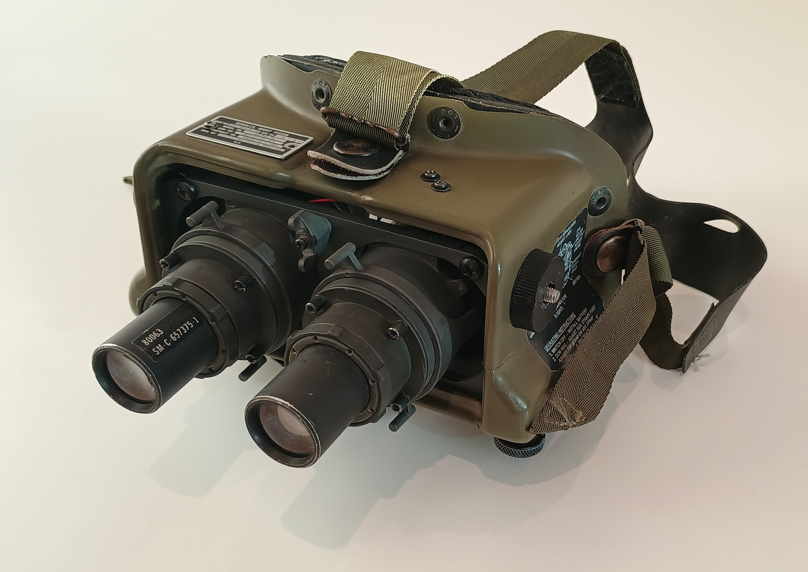
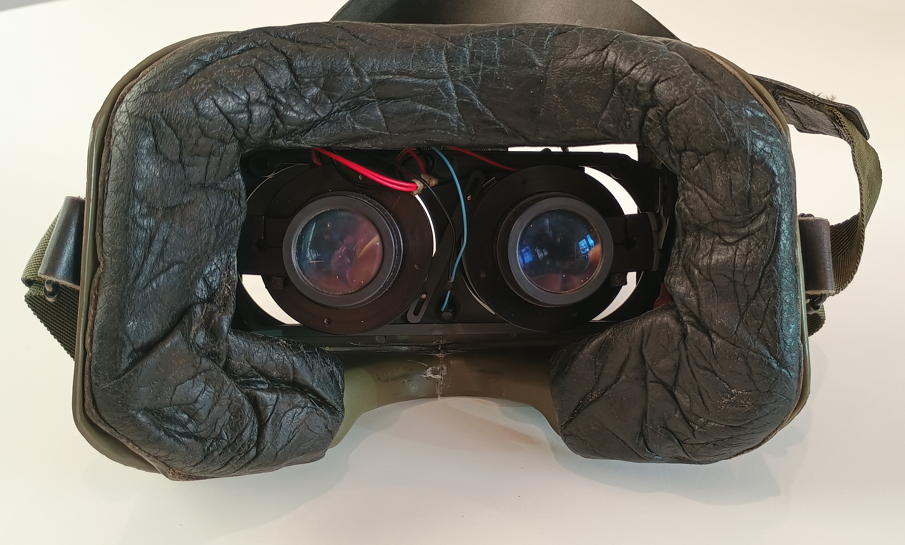
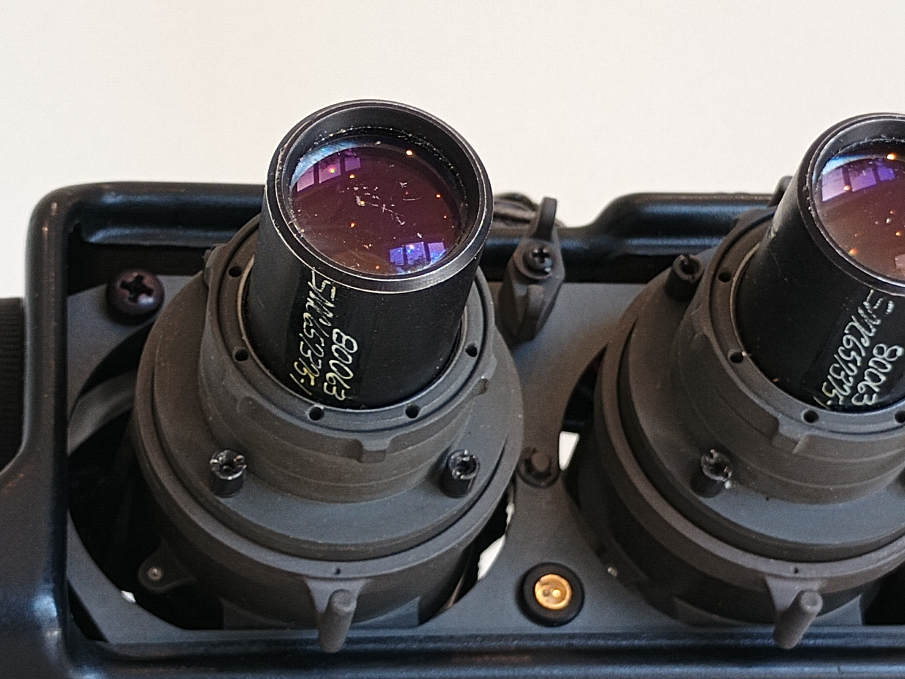
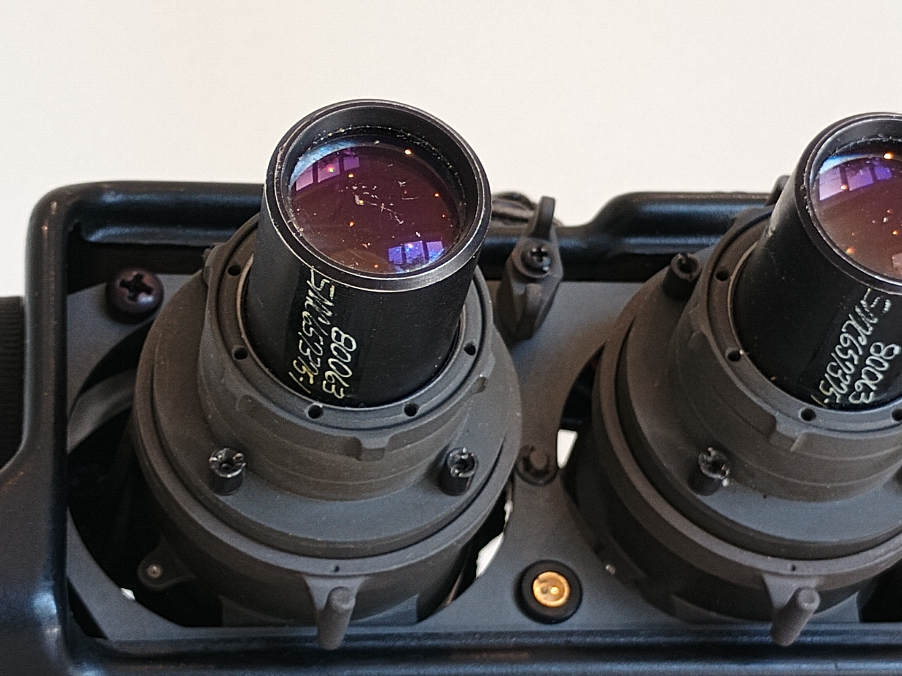

AN/PVS-5A
America's first practical head worn gen 2 night vision device.


This device comes from a time before dovetails, shrouds, mounts and AA batteries. As a result, everything is bolted inside a plastic shell which you strap to your face. Not ideal for comfort, but no one had thought of something better yet. This contruction makes the goggles quite fragile, with adjustments made often shifting out of place. It's easy to snag an internal wire and damage the intensifiers or connectors.
The original battery used was the military BA-5567a/u, which AFAIK is out of production obsolete, and impossible to find. Luckily, the PVS5 runs on 3v, so it's possible to adapt them to CR123. Adapters were previously available on the commercial market, but good luck finding one for sale nowadays. I'm working on a 3d printed replacement, files to come soon(tm).
Litton M802
The M802 is the commercial version of the AN/PVS-5A. It is identical to the regular 5A, but uses black plastic instead of olive drab. This one came with an adapter for TR132ts, but could use cr123 with some modification.
 
